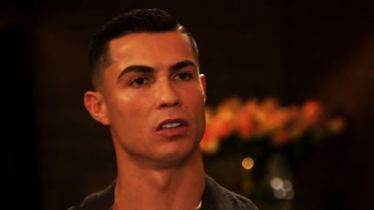

Piers Morgan Interview — Blasting Manchester United
The bombshell interview: In November 2022, Ronaldo sat down with British broadcaster Piers Morgan for the talk-show 'Piers Morgan Uncensored', manufacturing football's biggest bomb of the year. Aired on TalkTV, it saw him mercilessly blast Manchester United, manager Ten Hag, former teammate Rooney and interim boss Rangnick — the language so fierce and the attitude so decisive that it left fans worldwide dumbstruck.
Feeling betrayed: Ronaldo dropped his most lethal line: 'I feel betrayed by Manchester United.' He claimed that from the moment he returned he felt two or three people did not want him, that he had been made a scapegoat, isolated 'like a black sheep'. When Morgan pushed him on whether the club was forcing him out, he coldly replied: I don't care, people should hear the truth.
Blasting Ten Hag: As for manager Erik ten Hag, Ronaldo flat-out said 'I have no respect for him', citing Ten Hag's lack of basic respect for him. He also took a swipe at interim Ralf Rangnick, calling him 'not even a proper coach'. This kind of open mutiny against the manager's authority is forbidden in any dressing room, and the player-manager relationship was irreparable.
Old feud with Rooney: Confronted with criticism from former partner Wayne Rooney, Ronaldo retorted, hinting Rooney was jealous — 'probably because I'm still playing at a high level after he retired'. Writing off a long-time ally like that, elevating personal grievance above team honour, was breathtakingly petty and left many veteran fans cold.
Facilities rant: Most absurdly, Ronaldo tore into United's pool, spa, kitchen and gym, claiming United had made 'zero progress' since Sir Alex Ferguson. Tactical failure laid entirely at the door of hardware was mocked as 'taking excuses to a new level' — a textbook sore-loser deflection, conveniently ignoring that he had also benefited from those facilities.
Contract termination: After the interview aired United struck back hard. On 22 November 2022 the club announced that Ronaldo would 'leave Manchester United by mutual agreement with immediate effect', his contract terminated. It was a rare 'sacking' of a superstar in United history, and Ronaldo went into the World Cup as the only football megastar without a club.
Burning his own bridges: After the World Cup no elite club came for him; he eventually left for Al Nassr in Saudi. The interview is widely regarded as the worst PR disaster of Ronaldo's career — it ended his Old Trafford story and left European football deeply doubting his professionalism and EQ, laying the groundwork for his slide from European elite to Middle East cash-grab.